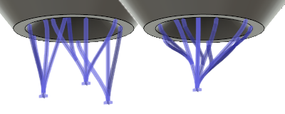

<div id="supportBouquet_bar_area_macro_tree_structure"><p>バーをブーケに併合するためのプリセットから選択するか、カスタム値を指定します。</p>
<table class="tipTable" cellspacing="10">
<tr>
<td><center></center></td>
</tr><tr>
<td><center><p><b>ブーケ プリセットの例</b><br><em>大きいブーケよりも何本かバーが少ない、小さいブーケ バンドルです。</em></p></center></td>
</tr></table>
</div>